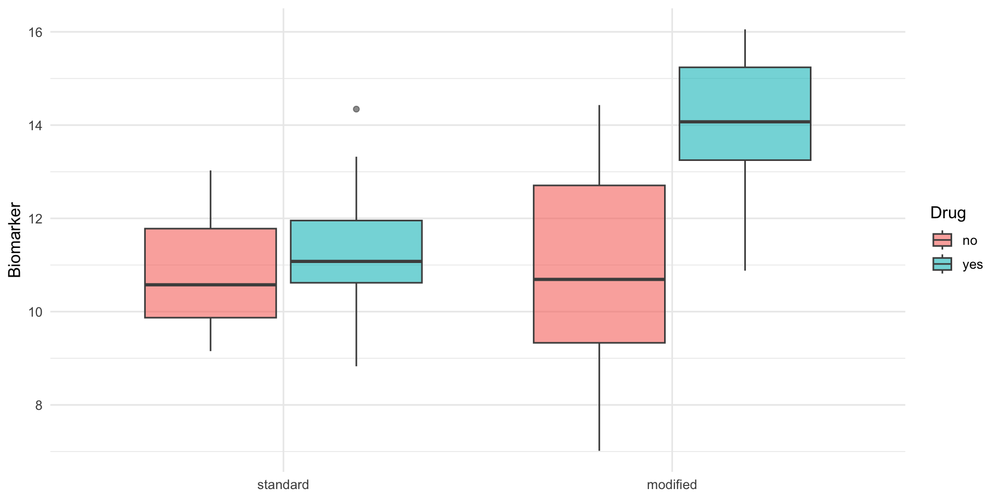

# A tibble: 4 × 5
drug diet mean sd n
<fct> <fct> <dbl> <dbl> <int>
1 no standard 10.8 1.25 10
2 no modified 10.8 2.45 10
3 yes standard 11.2 1.73 10
4 yes modified 14.0 1.67 10Course 3 — #courses
Note
Inference lab using the five-step template: Hypothesis → Visualise → Assumptions → Conduct → Conclude.
Course 2 linear regression and ANOVA; familiarity with the formula interface.
Bench and translational biology lives on small, carefully structured experiments whose designs are often misread as simple one-way comparisons. Blocking groups observations that share a nuisance variable (a batch, a day, a plate) so that comparisons are made within blocks. Factorial designs manipulate two or more factors at once and estimate main effects and interactions from a single experiment. Split-plot designs randomise two factors at different scales — a hard-to-change factor (oven temperature) at the whole- plot level, an easier one (position on the tray) at the sub-plot level — and the analysis must respect that structure.
Pseudoreplication is what happens when the experimental unit and the observational unit are confused. If one animal’s blood is pipetted into ten wells, the ten wells are not ten independent samples; they are ten technical replicates of one biological replicate. Analysing them as independent inflates the apparent sample size, shrinks the standard error, and produces spuriously small p-values. The fix is to aggregate within the experimental unit or use a mixed model that knows about the nested structure.
A useful question to ask before every analysis: what is the unit I could have independently randomised? That is the unit of analysis. If an intervention was applied to a cage but measurements were taken on each mouse, the cage is the unit.
A drug and a diet each affect a continuous biomarker, and their combination may have a non-additive effect (interaction).

Independent observations within each cell (every replicate is a separate biological unit), approximately normal residuals, and equal variance across cells. For the pseudoreplication demonstration we deliberately break the independence assumption.
# A tibble: 4 × 5
drug diet mean sd n
<fct> <fct> <dbl> <dbl> <int>
1 no standard 10.8 1.25 10
2 no modified 10.8 2.45 10
3 yes standard 11.2 1.73 10
4 yes modified 14.0 1.67 10Analysis of Variance Table
Response: y
Df Sum Sq Mean Sq F value Pr(>F)
drug 1 32.603 32.603 9.7626 0.00351 **
diet 1 17.624 17.624 5.2774 0.02753 *
drug:diet 1 19.424 19.424 5.8162 0.02110 *
Residuals 36 120.226 3.340
---
Signif. codes: 0 '***' 0.001 '**' 0.01 '*' 0.05 '.' 0.1 ' ' 1Now a pseudoreplication error. Suppose each biological replicate was measured three times (technical replicates) and we naively treated the 3 × rows as independent.
# A tibble: 2 × 6
analysis term estimate std.error statistic p.value
<chr> <chr> <dbl> <dbl> <dbl> <dbl>
1 bad drugyes:dietmodified 2.90 0.650 4.46 0.0000189
2 good drugyes:dietmodified 2.79 1.16 2.41 0.0211 The point estimate barely moves; the standard error in the bad analysis is smaller because the apparent n is three times larger.
In a simulated 2 × 2 factorial experiment (10 biological replicates per cell), there was evidence of an interaction between drug and diet on the biomarker (F and p from the ANOVA table above). Naive analysis of technical replicates as independent observations shrinks the standard error of the interaction estimate without changing the point estimate — a textbook pseudoreplication artefact.
R version 4.6.1 (2026-06-24)
Platform: aarch64-apple-darwin27.0.0
Running under: macOS Golden Gate 27.0.1
Matrix products: default
BLAS: /opt/homebrew/Cellar/openblas/0.3.34/lib/libopenblasp-r0.3.34.dylib
LAPACK: /opt/homebrew/Cellar/r/4.6.1_1/lib/R/lib/libRlapack.dylib; LAPACK version 3.12.1
locale:
[1] C.UTF-8/C.UTF-8/C.UTF-8/C/C.UTF-8/C.UTF-8
time zone: Europe/Berlin
tzcode source: internal
attached base packages:
[1] stats graphics grDevices utils datasets methods base
other attached packages:
[1] lubridate_1.9.5 forcats_1.0.1 stringr_1.6.0 dplyr_1.2.1
[5] purrr_1.2.2 readr_2.2.0 tidyr_1.3.2 tibble_3.3.1
[9] ggplot2_4.0.3 tidyverse_2.0.0
loaded via a namespace (and not attached):
[1] gtable_0.3.6 jsonlite_2.0.0 compiler_4.6.1 tidyselect_1.2.1
[5] scales_1.4.0 yaml_2.3.12 fastmap_1.2.0 R6_2.6.1
[9] labeling_0.4.3 generics_0.1.4 knitr_1.52 backports_1.5.1
[13] pillar_1.11.1 RColorBrewer_1.1-3 tzdb_0.5.0 rlang_1.3.0
[17] utf8_1.2.6 broom_1.0.13 stringi_1.8.9 xfun_0.62
[21] S7_0.2.2 otel_0.2.0 timechange_0.4.0 cli_3.6.6
[25] withr_3.0.3 magrittr_2.0.5 digest_0.6.39 grid_4.6.1
[29] hms_1.1.4 lifecycle_1.0.5 vctrs_0.7.3 evaluate_1.0.5
[33] glue_1.8.1 farver_2.1.2 rmarkdown_2.32 tools_4.6.1
[37] pkgconfig_2.0.3 htmltools_0.5.9